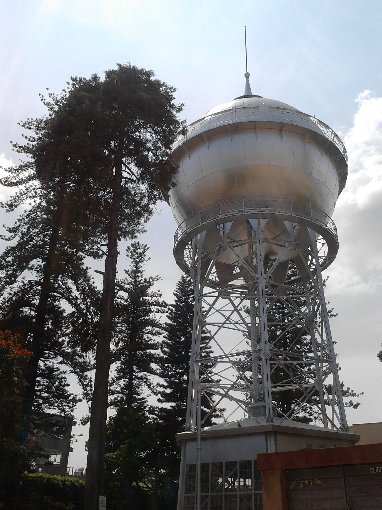
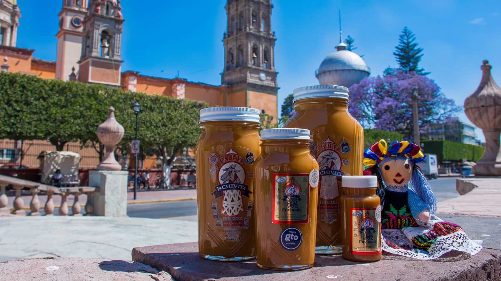
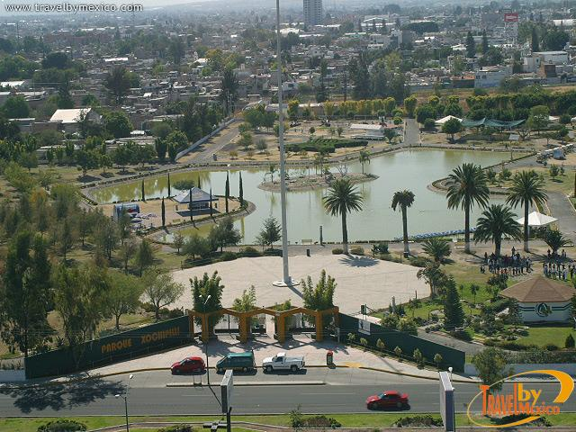
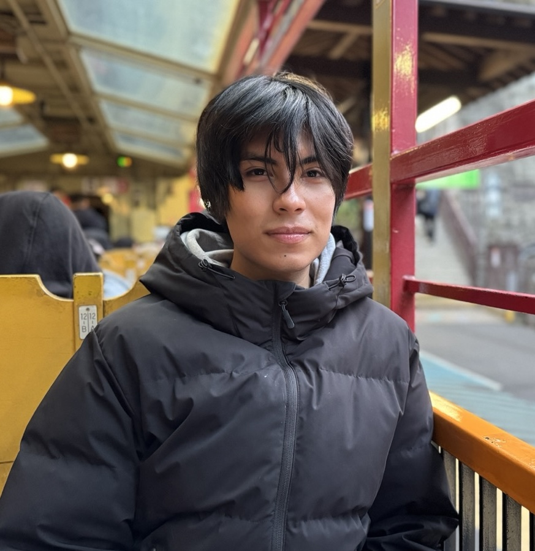

Get to know Celaya
Find hidden gems, iconic landmarks and local events that make this city
unique.

Celaya's "Ball of Water"
Iconic 1908 water tower recognized as a city symbol.

Delicious "Cajeta"
Traditional caramelized “dulce de leche” since the 1900's

Xochipilli Park
Great for family picnics and weekend strolls.

Your guide
“I have lived all my childhood in Celaya, so I can show you all there is to know about the city.”
Eduardo Hernández